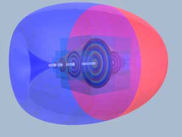

|


BACK
TO INTRODUCTION /
VORTEX SCIENCE HOME PAGE
MAGNET

This picture shows
the invisible forces in the form of vortices around a
permanent magnet polarizing the magnet in opposite
directions. Force enters at the center dividing itself up
into the opposite effects i.e. North and South. This
mechanism is not visible. Only the so called,"lines of
force,"can be made visible, indirectly. -
TOP
HOMEPAGE
/ INTRODUCTION
/ FREE
SAMPLE /
SUBSCRIBE
/
GERMAN
VERSION
- © Copyright
2000 W. Baumgartner
- VortexScience
- October 2000
|